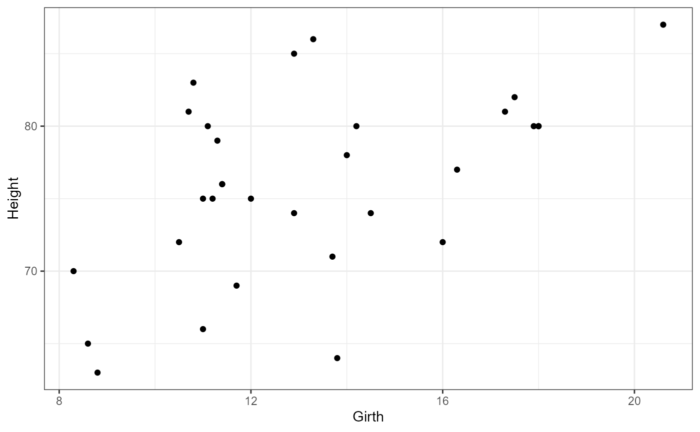
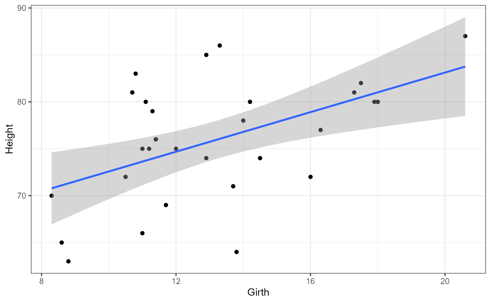
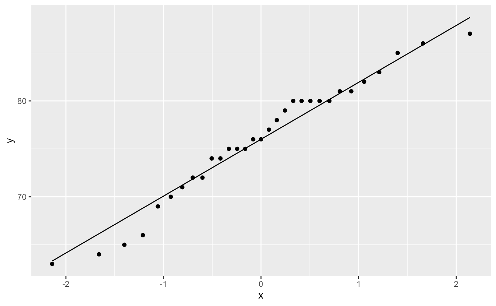
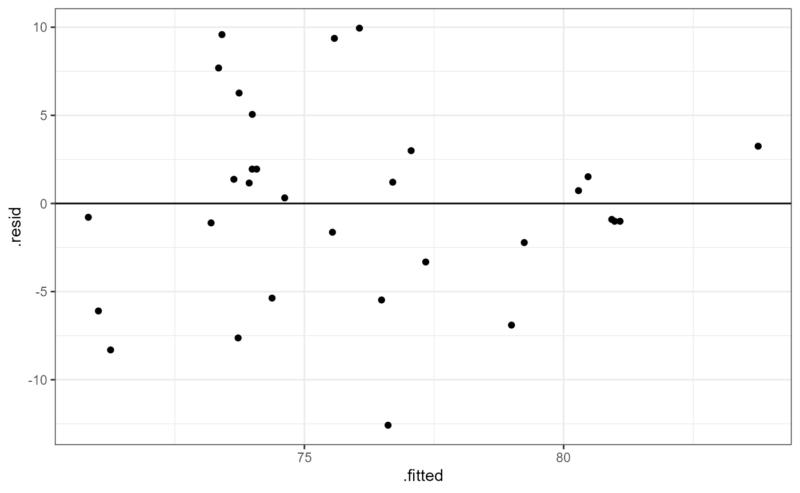

vignettes/articles/lab_13_linear-regression.Rmd
lab_13_linear-regression.RmdThis lab will demonstrate how to perform a simple linear regression in R. This includes checking assumptions, fitting the linear model, interpreting and visualizing the results.
We will be looking to see if girth (DBH) can be used as a predictor for tree height. But first, Let’s look at the full data set.
names(trees)## [1] "Girth" "Height" "Volume"
dim(trees)## [1] 31 3
head(trees)## Girth Height Volume
## 1 8.3 70 10.3
## 2 8.6 65 10.3
## 3 8.8 63 10.2
## 4 10.5 72 16.4
## 5 10.7 81 18.8
## 6 10.8 83 19.7Notice that the all three variables are continuous ( class =
<dbl>) and this suggests that we will be performing a
linear regression.
Let’s start by plotting all of the data. Height is going
to be our response variable, and Girth will be our
predictor variable.
ggplot(trees,
aes(x = Girth,
y = Height)) +
geom_point() +
theme_bw()
Does it appear that there is a uniform distribution of x-values (Girth)?
Does this look like a linear relationship to you? Why or why not?
We can also add a linear regression line using the
geom_smooth() argument in ggplot. The default for this
argument is to use a non-linear smoother, but we will be setting it to
be a linear smoother using the method = "lm argument.
ggplot(trees,
aes(x = Girth,
y = Height)) +
geom_point() +
geom_smooth(method = "lm") +
theme_bw()## `geom_smooth()` using formula = 'y ~ x'
For a simple linear regression with one continous predictor, we have the following equation:
\[ \hat{y} = \beta_0 + \beta_1 * x_1 \]
Where \(\beta_0\) is the intercept and \(\beta_1\) is the regression coefficient.
\[ H0: \beta_0 = 0 \] \[ H0: \beta_0 \ne 0 \]
We have seen this a number of times at this point. Often, we are not interested in the value of the intercept coefficient per se, but we have to pick a value to compare it with and 0 is as good as any. When you perform a linear regression you should always report your findings and relate it to the null hypothesis. But since we’re not usually interested in this value you would avoid discussing it in detail.
\[ H0: \beta_1 = 0 \] \[ H0: \beta_1 \ne 0 \]
For the regression coefficient, the plain word interpretation for the NULL hypothesis is that “there is no relationship between x and y”. Or, in other words, the value of y does not depend on the value of x.
Likewise, the alternative hypothesis is that there is a relationship between x and y, or that the value of y does depend on the value of x.
ggplot(trees,
aes(sample = Height)) +
stat_qq()+
stat_qq_line()
Most of the observations (points) fall close to the reference line, meaning that we have a normal distribution of residuals.
Let’s fit a linear model to the data.
tree_lm <- lm(Height ~ Girth, data = trees)Before we look at the results, let’s check our post-model fit assumption with a fitted vs. residuals plot.
ggplot(tree_lm,
aes(x = .fitted, y = .resid)) +
geom_point(
position = position_jitter(
width = 0.1,
height = 0)) +
geom_hline(yintercept = 0) +
theme_bw()
In this plot, the absolute magnitude of the maximum and minimum y-values are approximately the same (~ -10, ~ 10), although there is one point below the -10 region. There may be slightly less variation on the right side (points are closer to the line).
To assess the overall signifigance of our predictor variable
(Girth) we can use the anova() function to
print out an ANOVA tbale.
anova(tree_lm)## Analysis of Variance Table
##
## Response: Height
## Df Sum Sq Mean Sq F value Pr(>F)
## Girth 1 328.44 328.44 10.707 0.002758 **
## Residuals 29 889.56 30.67
## ---
## Signif. codes: 0 '***' 0.001 '**' 0.01 '*' 0.05 '.' 0.1 ' ' 1We have a row for the predictor variable as well as the residuals (unexplained variation).
We interpret the F-value and p-value for our predictor variable in a similar way as before.
NOTE The ANOVA table above directly answers the null hypothesis for our regression coefficient (\(\beta_1\)) that we stated above. The ANOVA table DOES NOT have any information about our intercept coefficient (\(\beta_0\)). Since we are often not interested in the intercept, the ANOVA table is usually appropriate for answering our main question about the relationship between x and y.
Remember that the hypothesis for the regression coefficient is that it is equal to zero (no relationship between x and y) or that it is not equal to 0 (there is a relationship between x and y). Therefore, our interpretation would look something like this:
Based on our data, we can reject the null hypothesis and conclude that the value of y (Height) does depend on the value of x (Girth) in black cherry trees (\(F_{1, 29}= 10.7, p = 0.003\))
lm() summary
summary(tree_lm)##
## Call:
## lm(formula = Height ~ Girth, data = trees)
##
## Residuals:
## Min 1Q Median 3Q Max
## -12.5816 -2.7686 0.3163 2.4728 9.9456
##
## Coefficients:
## Estimate Std. Error t value Pr(>|t|)
## (Intercept) 62.0313 4.3833 14.152 1.49e-14 ***
## Girth 1.0544 0.3222 3.272 0.00276 **
## ---
## Signif. codes: 0 '***' 0.001 '**' 0.01 '*' 0.05 '.' 0.1 ' ' 1
##
## Residual standard error: 5.538 on 29 degrees of freedom
## Multiple R-squared: 0.2697, Adjusted R-squared: 0.2445
## F-statistic: 10.71 on 1 and 29 DF, p-value: 0.002758We reject the null hypothesis for our intercept and conclude that it is not equal to 0 (estimate = 62, SE = 4.38, t-value = 14.152, p < 0.001)
We reject the null hypothesis for our regression coefficient (Girth) and conclude that it is not equal to 0 (estimate = 1.054, SE = 0.32, t-value = 3.272, p < 0.001)
The intercept is the average estimated height of cherry trees when the girth is equal to 0.
The regression coefficient means that for every 1-unit increase in girth, the height of the cherry tree increases by 1.05 feet on average.
The adjusted R2 value for this model is 0.2445. This means that approximately 24% of the variation in height can be explained by the measured girth. Or, more generally this model explains ~24% of the variation in our data.
\[ \text{Height} = 62.03 + 1.05 * \text{Girth} \]
Let’s say you measure the girth of a new cherry tree and it is 19.75 inches. What would you predict the height to be?
62.03 + 1.05 * 19.75## [1] 82.7675Now, let’s say that you measure the height of a cherry tree as 76 feet. What do you estimate the Girth will be?
First, re-arrange the equation to have Girth be isolated on one side of the = sign:
\[\frac{(\text{Height} - 62.03)} {1.05} = \text{Girth} \]
(76 - 62.03) / 1.05## [1] 13.30476